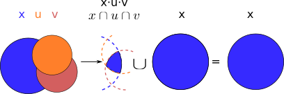

El libro verde se adquiere en el edificio de rectorado, en la sección de comunicacion,
que se encuentra en planta baja del edificio.
El horario: 8 a 14:30. Precio 8.5$.Sistemas Digitales
Transparencias en Formato PDF
Indice
Tema 1 : Introducción a los Sistemas Digitales Electrónicos
Profesorado
Contacto
Calendario
Febrero
Marzo
Abril
Mayo
EXAMENES
Tomografía axial computarizada


Sistema Digital

Entrada Analógica → Sensores Magnéticos.
Conversor A/D: Señal Analógica a Señales Digitales.
Circuitos lógicos : multiplexores, filtros, codificadores, etc …
Procesadores lógicos: procesamiento de las señales digitales para obtener la imagen.
# FPGA : Field Programming Gate Array.
# DSP : Digital Signal Processing.
# CPU : Centra Procesor Unit.
# GPU : Graphic Procesor Unit.
Electrónica


La Electrónica en la Profesión

Fases de Diseño de Circuitos Electrónicos Binarios
La Electrónica en la Carrera Universitaria
Analogica vs Digital
Representación Científica y Prefijos de las Unidades
Señales : Muestreo y Cuantificación

Codificación

EJERCICICIO: Calcular para las resoluciones de 3 bits y 16 bits cual es el mínimo incremento de señal codificable o error de cuantificación: con 3 bits el número de niveles es 23=8niveles y el mínimo relativo es 2-3=1/8; con 16 bits el número de niveles es 216 y el mínimo relativo es 2-16= 1/65536.
Representación de los números en código binario : [Tema2_RepInf]
Señales Binarias : Abstractas

Eje ordenada: valores abstractos (0/1, High/Low, ON/OFF, etc …).
Cronograma: Representación temporal de las señales digitales binarias.
Esa representación típica de los libros de texto, pizarra de clase, etc … es ideal ya que físicamente siempre habrá distorsión.
Señales Binarias : Físicas

Eje ordenada: magnitudes físicas (mV ó mA).
La señal física está distorsionada por causas como pej: línea larga de transmisión (efectos capacitivos e inductivos).
Un ejemplo típico de distorsión son los tiempos de subida y bajada, que no son nulos sino del orden de unos nanosegundos.
La distancia considerable entre los dos niveles (binario) a la entrada del receptor hace fácil la discriminación entre el '0' y el '1'.
Digitalización de las Señales
Ventajas
Abstracción
Ejercicio
Organización Académica
Programa de la Asignatura
Prácticas
Ejercicios
Evaluación
Metodología
Tema 2 : Representación Digital de la Información
Representación de los Números
Representación de los Números Decimales
Representación de los Valores Enteros en Código Binario
Representación de los Valores Enteros en Código Binario
Representación de los Valores Enteros en Código Octal
Representación de los Números en Hexadecimal
Calculadora de Python
Conversiones entre el sistema binario y sistemas con base potencia de 2
Suma binaria
Resta binaria
Aritmética Modular: la rueda

Representación binaria de números con 3 digitos.
23 : 8 combinaciones posibles,
Ejemplo: cuentakilómetros del coche.
Ejemplo: registro de 3 celdas → limitado a 8 combinaciones posibles.
¿Cual es la siguiente combinación a 111?, 111+1 = ¿ ?.
Calcular la representación del valor 33 en módulo 8 → Resto(33/8)=1 → en binario 001
33 pasos en la rueda equivale al número 001 → aritmética modular en módulo 8
Operaciones aritméticas: Octal y Hexadecimal
Representación de Números con Valores Enteros
Representación en Signo-Magnitud
Representación en Signo-Magnitud
Representación en complemento a la base menos 1. C9
Representación en complemento a la base menos 1. C1
Representación en complemento a la base 10 : C10
Representación en complemento a la base 2 : C2
Representación en complemento a la base 2 : C2
Extensión del signo en C2
Operaciones aritméticas en C2
Operaciones ariméticas C2: Overflow o Desbordamiento
Operaciones ariméticas C2: Overflow
Operaciones aritméticas C2: Overflow
C2: Representación gráfica del Overflow

Si a partir de la posición 010 nos movemos dos posiciones en sentido horario llegamos a la posición 100.
Si a 010 le sumamos el valor 2 nos da como resultado 100
Por lo tanto 010+010=100, es decir, 2+2=-4 → overflow ya que el +4 necesita 4 bits y estamos trabajando con 3 bits únicamente.
Asimetría del rango en C2: -4 con 3 bits
Complemento a 2 : Ejemplos
Aritmética Modular de valores representados en Complemento a 2
Representación de números binarios de 3 bits en C2
Operaciones de suma y resta modular → método gráfico
A partir de la posición 001 si nos movemos en sentido horario (SUMA modular) 2 posiciones obtenemos la posición 011, es decir, 1+2=3
A partir de la posición 110 si nos movemos en sentido horario (SUMA modular) 9 posiciones obtenemos la posición 111, es decir, -2+9=-1
A partir de la posición 110 si nos movemos en sentido antihorario (RESTA modular) 4 posiciones obtenemos la posición 010, es decir, -2-4=+2
Los errores de overflow se resuelven aumentando el número de bits de la representación, pero siempre existira un rango que si lo traspasamos dará overflow.
Comparación S-M, C1 y C2
Número en complemento a 2 y base hexadecimal
Número en complemento a 2 y base hexadecimal
Extensión del signo en C2: problema de la BASE
Suma y Resta aritmética en C1
Suma aritmética en C1
Razonamiento gráfico:

Si nos fijamos en los números negativos su valor esta desplazado una unidad de la rueda hacia la izda: el valor cero está en la marca 1 de la rueda, el valor -1 está en la marca 2 de la rueda, etc. El valor representado por el segmento perimetral de la circunferencia tiene una unidad inferior: el valor -1 tiene un segmento de 2 marcas del 0 hacia la izda.
El segmento o distancia del cero (1111) es UNO, el del -1 es DOS, el del -2 es TRES…..
Suma aritmética en C1
Ejemplos a completar para A=2 y B=5 :

Suma y Resta aritmética en C1
Números Reales Binarios
Números Reales Binarios: Norma IEEE-754
Formato IEEE-754 simple
representación de 32 bits: 1 bit para el signo / 8 bits para el exponente en exceso a 127 / 23 bits para la fracción
bit de signo: 0 si es positivo y 1 si es negativo
Formato IEEE-754 doble
representación de 64 bits: 1 bit para el signo / 11 bits para el exponente en exceso a 1023 / 52 bits para la fracción
bit de signo: 0 si es positivo y 1 si es negativo
IEEE 754: Números especiales
El Nº -5.5/1024 en los dos Formatos IEEE-754
Representación de los Caracteres
ASCII Standard
ASCII Extendido
UTF-8
Unicode Points
Otros Códigos Binarios
Binary Coded Decimal : BCD
Código Gray
Codificador Gray Binario

Codificador binario → gray:
- Herramienta DK → 4 funciones y 4 variables
- \(g_i = b_i \oplus b_{i+1}\)
- \(g_{MSB} = b_{MSB}\)
Codificador gray → binario:
- Herramienta DK → 4 funciones y 4 variables
- \(b_i = g_i \oplus g_{i+1} ... \oplus g_{n-1}\)
- \(b_{MSB} = g_{MSB}\)
Johnson
Tema 2: Ejercicios
Tema 3 : Algebra de Conmutación ó Boole. Funciones Lógicas.
Matemática Lógica Binaria
Tablas de la Verdad de los operadores NOT, OR, AND, XOR
Tablas de la Verdad de los operadores NOR, NAND, XNOR
Puertas Lógicas

Circuitos Digitales : Expresiones Lógicas
F(x,y)= x̅y+xy̅.
F(x,y,z)= x̅y̅z̅ + xyz̅ + x̅yz + xyz̅.
Circuito digital en 3 niveles: not-and-or.

Algebra de Boole
Link: algebra de conmutación funciones.pdf
Generación de Funciones mediante puertas Lógicas NAND

Síntesis matemática de una función lógica
Formas Canónicas de una Función: Síntesis por minitérminos y maxitérminos
Lógica Positiva: Relación y/o con */+
Lógica Negativa: Relación y/o con */+
Razonamiento de Y / O
Ejercicio: Síntesis Función XOR
Optimización mediante los diagramas de Karnaugh
Forma Canónica SOP: Suma de Minitérminos
Forma Canónica POS: Producto de Maxiterminos
Relación entre la forma canónica SOP y POS
Simplificación de las funciones mediante los Diagramas de Karnaugh (DK)
Diagrama de Karnaugh de la funcion F(x1,x2,x3)

Son adyacentes las celdas de la misma columna o de la misma fila con todas las variables comunes menos una. Por eso la tercera columna ha de ser 11
Observar que cada celda equivale a un minitérmino y un maxitérmino de la Tabla de la verdad
Por lo tanto, el diagrama DK representa las formas canónicas SOP y POS.
Simplificación de la Función mediante DK

Si sumamos los miniterminos de la 4ª columna \(Y=f(x_1,x_2,x_3)=m_4+m_5=x_1\overline x_2\overline x_3+ x_1\overline x_2x_3 = x_1\overline x_2 (\overline x_3+x_3) = x_1\overline x_2\), se ha simplificado el número de variables de 3 a dos. La función simplificada es \(Y= \overline x_1 x_2x_3+x_1\overline x_2\)
Sumar dos miniterminos adyacentes equivale a agrupar dos celdas adyacentes y reducir una variable.
Ejercicios básicos matemáticos en el dominio del Algebra de Boole
Ejercicios básicos : representación gráfica mediante conjuntos
\(x+(x\cdot u\cdot v \cdot ...)= x(1+ u\cdot v \cdot ...) =\\ x\cdot 1 = x\)

\(x\cdot(x+u+v+ ...)= x(1+u+v+ ...)=\\x\cdot 1 = x \)

Ejercicios básicos matemáticos en el dominio del Algebra de Boole
Ejercicios básicos matemáticos en el dominio del Algebra de Boole
Ejercicios básicos matemáticos en el dominio del Algebra de Boole
Nominación Teoremas
Simplificación de funciones mediante axiomas y teoremas del Algebra de Boole
Simplificación de funciones mediante el Diagrama de Karnaugh
Ejercicios matemáticos en dos dominios Gráfico/Algebra de Boole
Cuaderno de Ejercicios: Capítulo 1
Planteamiento de los Ejercicios Capítulo 1
Planteamiento de los Ejercicios Capítulo 1
Planteamiento de los Ejercicios Capítulo 1
Binary Coded Decimal (BCD)
Binary Coded Decimal (BCD)
Diseñar un circuito digital simplificado que decodifique el codigo binario BCD en uno de los diez dígitos: 0,1,…,9

Tema 4: Lenguaje de Descripción Hardware VHDLs
Very high speed integrated circuits Hardware Description Language (VHDL)
Descripción del Hardware de un circuito digital.
-- Descripción VHDL Primavera 2023
-- Circuito light_bit.vhd:
-- Puerta lógica XOR extendida
entity light_bit is
port (
x,y : in bit;
z : out bit
);
end entity;
architecture rtl of light_bit is
signal s,t,u,v : bit;
begin
s <= not x;
t <= not y;
u <= x and t;
v <= y and s;
z <= u or v;
end rtl;
Circuito light_bit.vhd
Cronogramas

Señales VHDL :tipos
Señales VHDL : tipos de datos
Señales VHDL : Buses
Señales VHDL : Buses
Sentencias VHDL : Asignación Concurrente
Sentencias Concurrentes
Sentencias Concurrentes
Entidad
La entidad describe el comportamiento del circuito digital visto desde fuera, es decir, describe únicamente los accesos de entrada y salida del circuito. Los accesos de entrada y salida se realizan a través de señales digitales binarias denominadas puertos.
La entidad se define con el keyword ENTITY
La entidad que hay nominarla con un nombre. Este nombre condiciona el nombre del fichero donde se almacena, que ha de tener el mismo nombre con y la extensión .vhd
Las señales tipo PORT pueden ser de entrada (IN) ó salida (OUT) ó salida_y_entrada (BUFFER).
Además del modo de la señal (IN-OUT-BUFFER) es necesario declarar el tipo de los datos (BIT)

Las señales cuyos datos son de tipo BIT admiten los valores '0' y '1'
Sintaxis
entity light_bit is
port (
x,y : in bit;
z : out bit
);
end entity;Arquitectura
Arquitectura "Lógica Transferencia entre Registros" (RTL)
Arquitectura "Funcional"
Hojas de Referencia
Síntesis: Herramienta Quartus

Entrada: código VHDL "light_bit.vhd"

Salida: simulación y síntesis : bitstream "quartus_light.sof"
Simulación: Herramienta Modelsim/Questa
Fabricación: FPGA Cyclone V de Intel
Librerías y Paquetes
Primer Diseño
Primer Diseño
Ejercicios Prácticos de Diseño de Circuitos
Ejercicios Prácticos de Diseño de Circuitos
Librerías y Paquetes
Señales std_logic
Señales std_logic
Librería IEEE: Paquete std_logic_1164
Variables vs Señales
Variables vs Señales
Variables vs Señales
Variables vs Señales
Simulación y Fabricación
Tema 5: Circuitos Aritméticos
Operaciones Aritméticas
Semi-Sumador (Half Adder)
Sumador Completo (Full Adder)
Full Adder

Figure 1. Full Adder
Sumador Completo usando semi-sumadores
Sumador Completo usando semi-sumadores
Sumador Completo usando semi-sumadores
Sumador Completo usando semisumadores
Tabla de la verdad con 3 variables y 6 funciones
\(A_1, B_1, C_0, S_a, C_a, S_b, C_b, C_1, S_1\)
\(S_1=S_b\)
\(C1=\overline C_a \cdot Cb + C_a \cdot \overline Cb = C_a \oplus C_b\)

\(C1=C_a + C_b\) → interpretarlo con lógica negativa
A1 | B1 | C0 | Sa | Ca | Sb | Cb | C1 | S1 |
0 | 0 | 0 | 0 | 0 | 0 | 0 | 0 | 0 |
0 | 0 | 1 | 0 | 0 | 1 | 0 | 0 | 1 |
0 | 1 | 0 | 1 | 0 | 1 | 0 | 0 | 1 |
0 | 1 | 1 | 1 | 0 | 0 | 1 | 1 | 0 |
1 | 0 | 0 | 1 | 0 | 1 | 0 | 0 | 1 |
1 | 0 | 1 | 1 | 0 | 0 | 1 | 1 | 0 |
1 | 1 | 0 | 0 | 1 | 0 | 0 | 1 | 0 |
1 | 1 | 1 | 0 | 1 | 1 | 0 | 1 | 1 |
Sumador Completo usando semisumadores

Sumador Paralelo Acarreo Serie
Sumador Paralelo Acarreo Paralelo
Sumador Paralelo Acarreo Paralelo
Sumador Paralelo Acarreo Paralelo
\(C_i=\overline A_i B_i C_{i-1} + A_i \overline B_i C_{i-1} + A_i B_i \overline C_{i-1} + A_i B_i C_{i-1}=\\ =(A_i \oplus B_i) \cdot C_{i-1} + A_i B_i = P_i \cdot C_{i-1} + G_i \)

Conclusión: P_i y G_i permiten expresar el acarreo de forma más clara.
\(C_1=G_1 + P_1 \cdot C_0\)
\(C_2=G_2 + P_2 \cdot C_1 = G_2 + P_2G_1 + P_2P_1C_0 \)
\(C_3=G_3 + P_3 \cdot C_2 = ... = G_3 + P_3G_2 + P_3P_2G_1 + P_3P_2P_1C_0 \)
Interpretar el resultado mediante su descripción proposicional Y/O
Sumador Serie
Sumador serie:
-Un Full Adder con 3 entradas (sumandos y acarreo anterior) y dos salidas (suma y acarreo)
-Necesita de 3 "registros de desplazamiento" para memorizar los operandos y la suma. Cuando el reloj genera un disparo positivo, el contenido de las celdas del registro se desplazan una posición hacia la derecha.
-Celda de memoria para recordar el acarreo previo. La escritura de la memoria es síncrona con el reloj.
-Puerta de bloqueo: mientras el reloj está a cero los sumandos valen cero
-Dispositivo de sincronismo: el reloj

Sumador/Restador de 4 bits
Complementador
Sumador/Restador de 4 bits

Sumador/Restador de 4 bits
Semi-Restador
Restador Completo
Acumulador
Multiplicador
Unidad Aritmético Lógica (ALU)
Tema 6: Otros Circuitos Combinacionales
Circuitos Combinacionales
Multiplexor
Concepto - Símbolo
El circuito multiplexor de N entradas de datos y 1 salida de datos tiene la función de seleccionar una de las entradas y conectarla a la salida. Para ello se sirve de M entradas de control donde 2M=N
Figure 3. Multiplexor 4x1

Diseño
Diseño
DK para una función de 6 variables
Gráfica de 26=64 celdas
4 matrices de 16 celdas cada una, representadas en 3 dimensiones
1 matriz de variables \(I_3, I_2, I_1, I_0\) para cada combinación \(S_2S_1\)

Esquema Eléctrico
Señal Strobe : señal de validación, habilitación. Es necesario que este activa para que el circuito procese los datos de entrada y la salida sea válida.
Se implementa mediante la función ( Z= Strobe AND F ) donde es necesario activar Strobe para que la salida Z tenga el valor de F, en caso contrario Z=0. Si la señal strobe se activa con lógica negativa → \(Z=\overline {Strobe} \cdot F\)

Hoja de Características Comercial
Extensión de Multiplexores
Extensión de Multiplexores
Aplicaciones: Generador de Funciones
Ejemplos: Generador de Funciones
Codificador (Encoder)
Concepto
Un codificador realiza la conversión de un número con cualquier tipo de código no binario a código binario.
Pej: un codificador de código hexadecimal a código binario se implementa mediante un circuito con un bus de datos de entrada de 16 hilos donde únicamente (codificador sin prioridad) se activa el hilo asociado a uno de los 16 dígitos hexadecimales. Para codificar en binario los 16 dígitos son necesarios 4 bits (24 combinaciones), por lo que el bus de datos de entrada tiene un tamaño de 16 pistas y el de salida tiene un tamaño de 4 pistas.

Codificador Hexadecimal sin Prioridad : Diseño
Codificador Hexadecimal : Diseño
Codificador Hexadecimal : Diseño
Ejemplo de Diseño: BCD sin prioridad
Ejemplo de Diseño: Codificador 4x2 con prioridad
Decodificador / Demux
Concepto
Diseño: Salidas mutuamente excluyentes
Salidas Mutuamente excluyentes: únicamente se activa una de las salidas
Decodifificador Hexadecimal:

Diseño: Salidas mutuamente excluyentes
Ejemplo de Diseño: Decodificador BCD
símbolo línea con lógica negativa

Extensión de los Decodificadores
Extensión de los Decodificadores mediante CD54ACT138.
Extensión de los Decodificadores mediante CD54ACT138.
Diodo L.E.D.
LED: Circuito Excitador
CC BY-SA 2.5,, Link
Para que el diodo LED se encienda es necesario inyectarle una corriente en la dirección Anodo → Cátodo mediante una tensión del Anodo superior a la tensión del Cátodo.

Controlando la tensión de uno de los dos terminales producimos el encendido/apagado (ON/OFF) del diodo LED.
Display 7 segmentos

Cada uno de los 7 segmentos del Display es un diodo LED que se puede encender/apagar.
Excitador de un Display de 7 segmentos

Los 7 LEDs del Display tienen el Anodo ó el Cátodo común.
Si el Display es de Anodo Común, se puede controlar el Cátodo de cada LED libremente con un 0 : lógica negativa.
-Iluminar el 0 : activar los segmentos f-e-d-c-b-a → 1000000.
-Iluminar el 5: activar los segmentos g-f-d-c-a → 0010010.
Si el Display es de Cátodo Común, se puede controlar el Anodo de cada LED libremente con un 1 : lógica positiva.
-Iluminar el 0 : activar los segmentos f-e-d-c-b-a → 0111111.
-Iluminar el 5: activar los segmentos g-f-d-c-a → 1101101.
Decodificador Display 7 Segmentos
Decodificador Display 7 Segmentos


Aplicaciones: Generador de Funciones
Aplicaciones: Conversor Serie Paralelo
Aplicaciones: Generador de Funciones: Decodificador y Multiplexor
Se puede generar una función mediante un Decodificador y/o un Multiplexor.
\(F=SUV\overline XYZ+ S\overline UVXY+ \overline S\overline UV\overline XY\overline Z\)
Una función con 6 variables puede distribuir las variables entre el decodificador (3x8) y el multiplexor (8x1) : 3 variables cada uno.
\(F=SOP=SUV\overline XYZ+ S\overline UVXYZ+ \\ S\overline UVXY\overline Z+
\overline S\overline UV\overline XY\overline Z\)

F=1 Si SUV=111, entonces \(O_7=1\), XYZ=011 e \(I_3\) y \(O_7\) están conectados
ó Si SUV=101, entonces \(O_5=1\), XYZ=111 e \(I_7\) y \(O_5\) están conectados
ó Si SUV=101, entonces \(O_5=1\), XYZ=110 e \(I_6\) y \(O_5\) están conectados
ó Si SUV=001, entonces \(O_1=1\), XYZ=010 e \(I_2\) y \(O_1\) están conectados

Convertidores de Código
Convertidores de Código
Generador-Comprobador de Paridad
Generador-Comprobador de Paridad
Generador-Comprobador de Paridad
Si el dato tiene más de dos bits la evaluación se realiza de dos en dos bits y en distintos niveles de evaluación.
Ejemplo: Bit de paridad par del dato 01101101

Generador-Comprobador de Paridad: Comunicaciones
Generador-Comprobador de Paridad CY74FCT480T: Hoja de Características
https://www.digchip.com/datasheets/parts/datasheet/477/CY74FCT480ATPC.php
Dos entradas de datos de 1 byte cada uno: \((AB...H)_1 \:y \:(AB...H)_2\)
Funciona como generador CHK/GEN=0 o como detector CHK/GEN=1
Como generador: genera 2 bits de paridad impar (ODD), uno para cada dato a transmitir: \(ODD_1\) y \(ODD_2\)
Como detector: recibe los 2 datos de 8 bits y los 2 bits de paridad \(PAR_1\) y \(PAR_2\)
-Como detector genera el bit de paridad impar del dato recibido y lo compara con el bit recibido PAR
-En caso de error, no distingue si el error es en la línea de datos 1 o en la línea de datos 2.

Comparador Binario
Concepto
Diseño comparador de 4 bits
Comparadores de 4 bits con entradas de Expansión

\(G=G_4+E_4G_3+E_4E_3G_2+ E_4E_3E_2G_1+E_4E_3E_2E_1G_C\)
\(L=L_4+E_4L_3+E_4E_3L_2+ E_4E_3E_2L_1+E_4E_3E_2E_1L_C\)
\(E=E_4E_3E_2E_1E_C\)
Comparadores de 4 bits con entradas de Expansión

\(G_C=0 \: L_C=0 \: E_C=1\)
\(G_L=G_4+E_4G_3+E_4E_3G_2+E_4E_3E_2G_1+E_4E_3E_2E_1G_C\)
\(L_L=L_4+E_4L_3+E_4E_3L_2+E_4E_3E_2L_1+E_4E_3E_2E_1L_C\)
\(E_L=E_4E_3E_2E_1E_C\)
\(G_H=G_8+E_8G_7+E_8E_7G_6+E_8E_7E_6G_5+E_8E_7E_6E_5G_L\)
\(L_H=L_4+E_4L_3+E_4E_3L_2+E_4E_3E_2L_1+E_4E_3E_2E_1L_C\)
\(E_H=E_8E_7E_6E_5E_L\)
Extensión de Comparadores sin Entradas de Expansión
Diseñar un Comparador de datos de 7 bits mediante 2 comparadores de 4 bits.
Métodos ascencente y descencente.

Extensión de Comparadores sin Entradas de Expansión
Comparador Comercial
Comparador CD74HC85: conexión mediante entradas de expansión en paralelo
Ejercicios de Análisis
BCD_adder_one_digit
BCD_adder_2digitos
BCD_sum_2digitos
mux_2displays
demultiplexor
mux_extension_decod
paridad_tx_rx
Wind Meter: veleta_encoder
Wind Meter: transductor
Wind Meter:gray_bin_encode